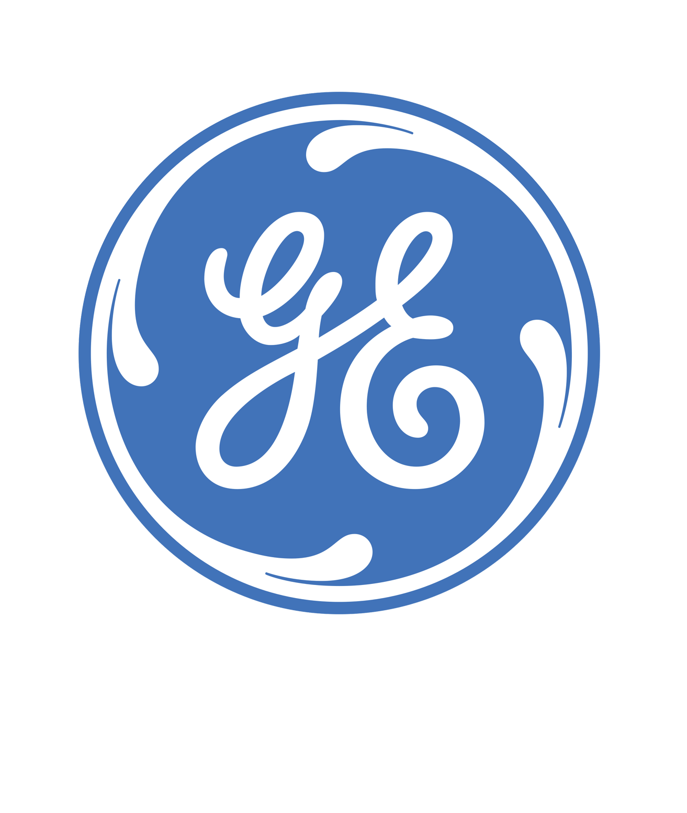
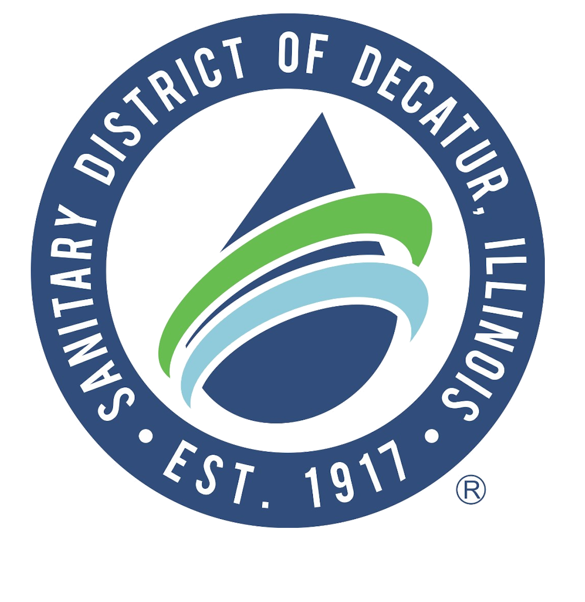
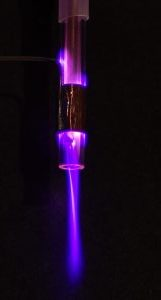
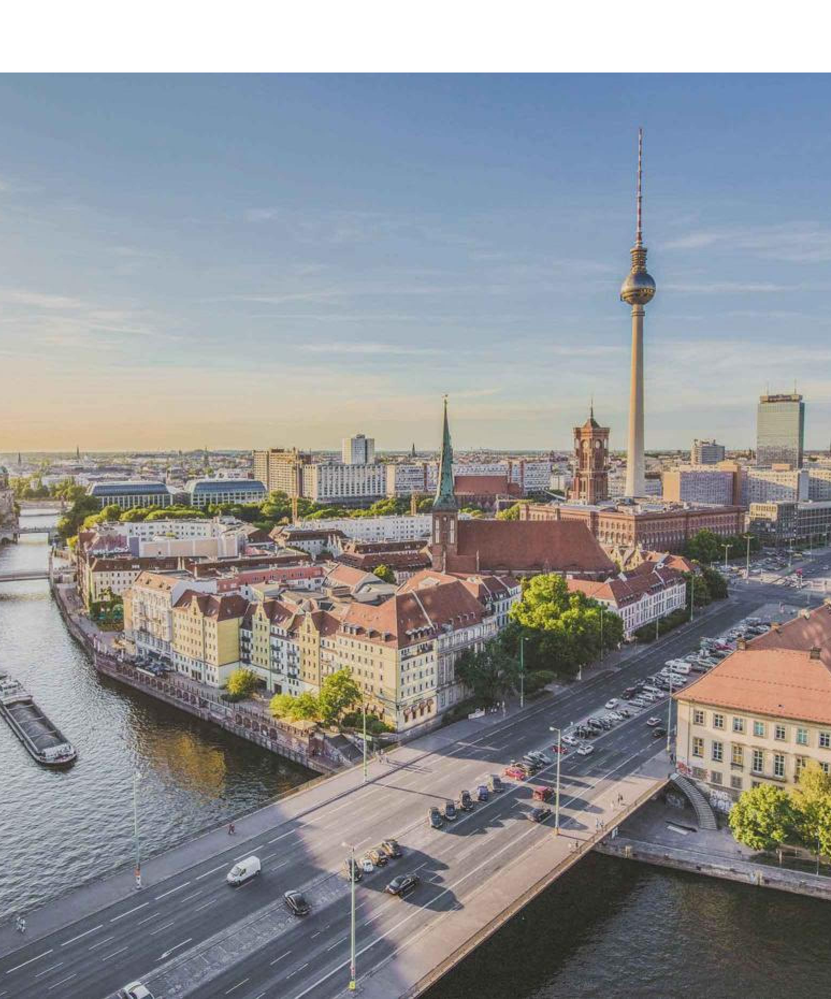

Internships

Manufacturing Operations Intern Summer 2019
GE Renewable Energy
- Generated proposal for automated washer system by determining specifications, quoting suppliers, performing cost analysis, and engaging Operations team
- Managed cross-functional team to design and install replacement for wooden pallets, reducing safety risks Supported 5S/Lean implementation by performing time studies and composing productivity reports to reduce cycle times

Engineering Intern Summer 2018
Sanitary District of Decatur
- Calculated piping system pressure loss to develop maintenance plan for 22 pump stations serving over 100,000 residents
- Created an interactive Excel tool, enabling engineering team to visualize design change impact on system performance
- Facilitated design meetings for a multimillion-dollar wastewater plant rehabilitation project
Experience

Undergraduate Research Assistant, Go Research Group Spring 2019
University of Notre Dame
- Experimented with various setups of plasma jets to determine if short-term plasma exposure increases material conductivity
- Analyzed data in MATLAB and communicated results in weekly presentations and final report
Teaching Assistant, AME Department Fall 2018
University of Notre Dame
- Led office hours and helped students debug Fortran code, navigate Unix, and hone technical writing
- Collaborated with a new professor on how to effectively structure and teach course curriculum

Notre Dame International, Study Abroad Summer 2018
Berlin, Germany
- Partook in Notre Dame engineering and history classes in Berlin.
- Programmed microprocessor/sensor systems to model IoT structures
- Notable excursions included a tour of Volkswagen's "Transparent Manufacturing Plant" in Dresden and hearing Internet founder Vint Cerf speak at the ACM International Conference on Mobile Systems in Munich.
- Member of GEP Student Advisory Board (advising and recruitment for future summers)
GE Leadership Day March 2018
University of Notre Dame
- Partook in educational peer team-building and leadership activities
- Explored the structure of and roles within a large engineering company
- Learned about new technology and trends within energy, aviation, and healthcare